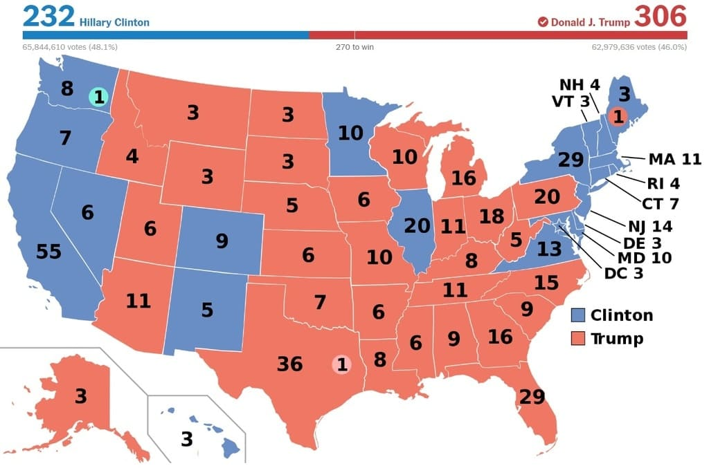
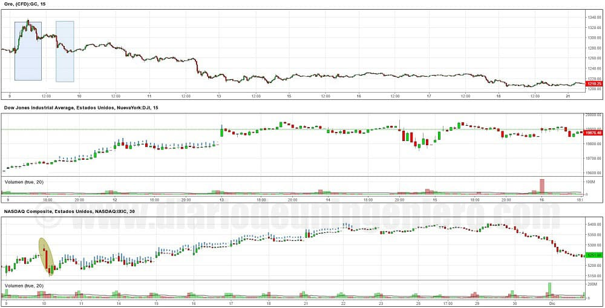

Este año teníamos una cita bien marcada, no era otra que las elecciones de los Estados Unidos el 8 de Noviembre, el primer martes después del primer lunes de noviembre.
En este caso los actores principales eran Hillary Clinton, la favorita, por el bando demócrata y Donald Trump por el bando republicano.
No ha habido unas elecciones que hayan generado tanta expectación en el marco internacional. Esto es así debido a la gran diferencia de la visión y a la forma de ser de los dos candidatos.
 Por un lado Hillary Clinton, primera mujer que se presenta a presidente en la historia de Estados Unidos, con una larga historia en la política americana.
Es bastante culta e inteligente, y domina bien la esfera internacional.
Siendo además del ala más moderada del partido demócrata y habiendo tenido que ceder a los partidarios del otro candidato por el partido demócrata para conseguir aunar seguidores.
Por ello en estas elecciones era garante de continuar con el estado de bienestar, con aquellas medidas como la extensión del seguro médico a más estadounidenses, el famoso Obamacare y de seguir una estrategia pacificadora en la escena internacional.
Además es defensora del medio ambiente, promoviendo las energías renovables y quería también empezar a gastar en infraestructuras para conseguir despertar en cierta medida el sector industrial.
Por un lado Hillary Clinton, primera mujer que se presenta a presidente en la historia de Estados Unidos, con una larga historia en la política americana.
Es bastante culta e inteligente, y domina bien la esfera internacional.
Siendo además del ala más moderada del partido demócrata y habiendo tenido que ceder a los partidarios del otro candidato por el partido demócrata para conseguir aunar seguidores.
Por ello en estas elecciones era garante de continuar con el estado de bienestar, con aquellas medidas como la extensión del seguro médico a más estadounidenses, el famoso Obamacare y de seguir una estrategia pacificadora en la escena internacional.
Además es defensora del medio ambiente, promoviendo las energías renovables y quería también empezar a gastar en infraestructuras para conseguir despertar en cierta medida el sector industrial.
Por otra parte Donald Trump, un multimillonario con un pasado muy polémico en los medios de comunicación, debido a contar con numerosas empresas e influencia en muchos sectores.
De un pensamiento un tanto nostálgico para muchos americanos, ya que es partidario de hacer una política que no encaja y tendría un coste económico muy alto para el mundo de hoy en día, donde está todo conectado y globalizado.
Sus ideas son la recuperación del centro de Estados Unidos, el despertar de las empresas industriales y del sector energético y poder competir con otros gigantes como China o Rusia en esos sectores.
Cosa imposible debido a los costes y salarios mucho más altos en USA. Sin embargo, debido a su tono más sincero y con un lenguaje mucho más sencillo y atractivo para los estadounidenses menos culturizados ha calado con gran fuerza.
Eso junto a la idea de que Estados Unidos está controlado por burócratas que solo piensan en sus bolsillos y ataques a la burguesía de Washington le ha hecho ganar mucha popularidad.
Da la paradoja de que él es uno de los que más se ha beneficiado durante años de ese sistema que tanto crítica y además haciendo mala praxis de lo que se exige a aquellos que se benefician del sistema.
Ya que ha evadido impuestos y está en numerosos juicios con gran parte de sus empresas.
De hecho tras la victoria electoral aún tiene que comparecer en más de 300 juicios.
Sin embargo al igual que en el Brexit el resultado fue aquel que nadie venía venir, y Trump ganó por goleada a Clinton quien no tardo en reconocer la derrota y tratar de limar asperezas.
Esto es así porque Estados Unidos no se puede permitir tener a la población dividida y más con dos candidatos tan dispares.
Así Trump también hizo lo suyo, descartando gran parte de sus medidas más polémicas y rebajando hasta donde podía llegar en otras.
Las medidas más polémicas que sustituyo o elimino fueron las siguientes:
Otras mediadas que serán realizadas en el mandato de Trump serán las siguientes:
Tras el final del escrutinio el resultado dio como vencedor a Trump. Estados clave para su victoria fueron Michigan donde gano contra pronóstico.
Nunca en los últimos 20 años había ganado un candidato republicano en este estado. Y es que la crisis no ha afectado en todos los estados por igual y en Michigan existen demasiadas desigualdades.
De hecho fue ahí donde Trump cerro su campaña. Otros estados donde siempre ha estado el triunfo del candidato vencedor han sido Ohio, Floria y Pennsylvania.
Pues bien en estos tres estados también gano Trump. En Pennsilvania al igual que en Michigan por un estrechísimo margen.
Cabe recalcar que el voto popular lo gano Clinton de ahí todavía más mérito la victoria de Trump que supo jugar bien sus cartas, y del equipo de campaña más bien.

A partir de las 3 de la madrugada hora española ya Donald Trump encabezaba las apuestas para ganar y el mercado no lo asimilo al principio.
Eso se pudo ver perfectamente en el mercado de divisas y en metales preciosos.
En la campaña debido a la incertidumbre el dólar llego a bajar hasta los 1.11:1 USD/EUR y según Trump iba viéndose vencedor el dólar perdido posiciones bajando hasta 1.13:1 USD/EUR.
Tras el pánico vendedor el dólar fue ganando margen hasta que la euforia llego a los mercado acabando en 1:108 con un diferencial de un 3.5% como se ve en el gráfico.
Unas sesiones más tarde el dólar tocaría máximos históricos desde el nacimiento del euro llegando a 1:10.04 muy próximos a la paridad.

El oro empezó a subir su cotización pero no llego tan alto como cuando el Brexit así como el índice de volatilidad.

Los principales índices europeos abrieron con grandes caídas pero poco a poco fueron remontando puestos alentados por las compras ya que unas elecciones de USA no pueden afectarnos tanto como la separación del Reino Unido.
Así pues cuando Trump salió retractándose de algunas medidas a la mañana siguiente en USA y Clinton pidiendo unidad, las bolsas empezaron a remontar y en concreto la americana.
En Estados Unidos los valores que habían favorecido a Trump en la campaña y sobre todo los valores industriales que veían a Trump como una oportunidad de despegar ya que estos últimos años ha sido donde más desempleo ha habido.
Empresas del sector industrial, mineras y acereras así como las empresas farmacéuticas que han tenido unos años muy malos con Obama debido a las limitaciones y al alto control por parte del gobierno.
En contra energías renovables y el sector tecnológico tras los discursos de Trump en los que se encoraba a que trajeran sus productos a Estados Unidos o sufrirían con medidas adicionales.
Como estos dos tipos de empresas cotizan en diferentes índices se vio una desigualdad muy grande entre el Nasdaq que casi acabo plano y el Dow Jones que consiguió llegar a máximos históricos.
En el índice del NASDAQ hay un elipse verde donde se puede observar como el Nasdaq sufrió una fuerte caída en la apertura.
En el siguiente gráfico apreciamos que ocurrió con los índices el día de las elecciones:

Varias sesiones más tarde el Nasdaq también subiría y ambos índices ahora mismo están en máximos históricos.
Si bien al principio tras la victoria de Trump parecía que todo se iba a desplomar rápidamente todo se recuperó y los todo giro al alza.
Además ha habido cierto rally en las materias primas ya que se prevé fuertes inversiones en infraestructuras para el próximo año.
© 2016 - All Rights Reserved - Diseñada por Sergio López Martínez
![[Valid RSS]](https://www.feedvalidator.org/images/valid-rss-rogers.png "Validate my RSS feed")